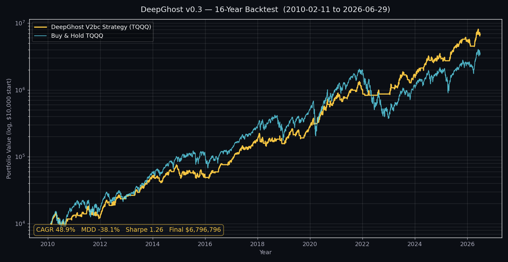

레버리지의 약점은 폭락
TQQQ 같은 3배 레버리지 ETF는 상승장에서 강력하지만, 한 번의 급락에서 자산이 크게 무너지면 회복까지 매우 오랜 시간이 걸립니다. 단순보유의 최대낙폭은 -81.75%에 달했습니다.
3배 레버리지(TQQQ)를 그냥 들고 있으면 한 번쯤 -80%가 넘는 폭락을 버텨야 합니다. Ghost.AI 전략은 TQQQ로 매매하면서도, 감내해야 할 최대 낙폭은 1배짜리 QQQ를 보유하는 수준(약 -38%)에 그칩니다.
최대낙폭(MDD) 비교 · Ghost.AI 낙폭은 1배 QQQ(-36%)와 같은 급입니다.
Ghost.AI 퀀트 전략 (매매 시그널) 을 과거 시장 데이터에 그대로 적용했을 때의 성과입니다. QQQ 신호로 TQQQ를 매매하되, 추세하락이 시작할때 현금화하여 손실을 최소로 유지합니다.
아래 수치는 과거 데이터로 전략을 재현한 가설적 시뮬레이션(백테스트) 결과이며, 실제 운용 트랙레코드가 아닙니다. 과거의 성과가 미래의 수익을 보장하지 않습니다.
전략과 단순 TQQQ 장기보유의 자산 성장을 같은 기간·같은 초기자본으로 비교했습니다.

같은 기간, 같은 자산으로 비교한 핵심 지표입니다.
| 지표 | Ghost.AI 전략 (V2bc) | 단순 TQQQ 장기보유 |
|---|---|---|
| 누적수익률 | +67,868% | +35,591% |
| 최종 자산 ($10,000 시작) | $6,796,796 | $3,569,051 |
| 연평균 수익률 (CAGR) | +48.91% | +43.17% |
| 최대낙폭 (MDD) | -38.06% | -81.75% |
| 시장 노출 기간 | 63.80% | 100% |
백테스트 기간 안의 모든 시작 시점을 기준으로, 보유기간별로 전략을 끝까지 들고 있었을 때의 수익률을 전수 집계했습니다.
3년 이상 보유한 모든 구간(3,363개)에서 손실로 끝난 경우는 0건이었습니다. 그 구간들의 가장 낮은 수익률조차 +58.72%였습니다.
보유기간이 길수록 손실 확률이 빠르게 줄어듭니다 (1년 10.32% → 2년 0.58% → 3년 0%). 더 정밀하게는, 약 2.2년(561거래일, 26.7개월) 이상 보유했을 때 역사적 손실 구간이 사라졌습니다.
위 "손실률 제로"는 백테스트 기간 기준의 과거 시뮬레이션 결과이며, 미래의 손실 없음이나 수익을 보장하지 않습니다. 실제 시장에서는 동일한 결과가 재현되지 않을 수 있습니다.
TQQQ 같은 3배 레버리지 ETF는 상승장에서 강력하지만, 한 번의 급락에서 자산이 크게 무너지면 회복까지 매우 오랜 시간이 걸립니다. 단순보유의 최대낙폭은 -81.75%에 달했습니다.
Ghost.AI의 AI 시그널은 유리한 국면을 식별해 그때만 TQQQ를 보유하고, 그 외 기간에는 현금을 보유합니다. 전체 기간의 약 36%는 시장 밖에 머물렀고, 그 결과 최대낙폭을 -38.06%로 절반 가까이 줄였습니다.
낙폭을 줄이는 대신 수익을 포기한 게 아닙니다. 같은 16년 동안 전략의 최종 자산은 약 $680만으로, 단순보유(약 $357만)의 1.9배에 도달했습니다. 위험 대비 수익(Sharpe·Calmar)도 더 높습니다.
큰 손실을 피하는 것은 단순한 방어가 아니라 복리를 지키는 일입니다. 깊게 무너지지 않으면 회복 구간을 건너뛰고 다음 상승을 온전히 누릴 수 있습니다. 그것이 16년의 격차를 만든 핵심입니다.
전략의 구체적인 진입·청산 규칙과 모델 내부 지표는 Ghost.AI의 핵심 자산으로 공개하지 않습니다. 본 페이지는 공식 V2bc 백테스트 엔진으로 산출한 검증 수치만 표기하며, 검증 기준일은 2026-06-30입니다.